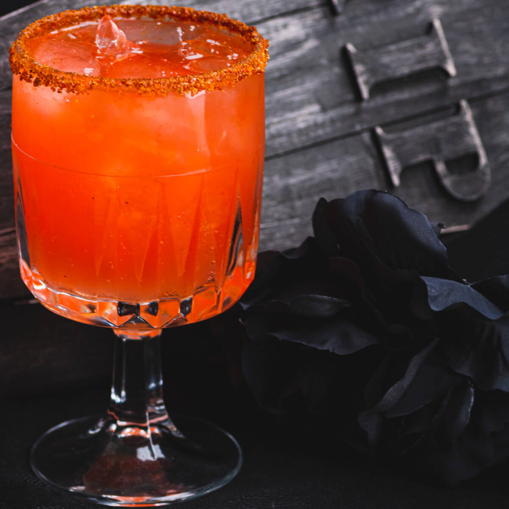

Vampiro

A vampiro is a sweet drink with tequila and spiced vodka
the sangrita mix along with the other ingredients will
mask the taste of the liquor so beware as this is a
sneak of a drink.
Ingredients
- Tequila
- Squirt
- Pineapple juice
- Spicy Tamarindo Smirnoff
- Lime juice
- Tajin
- Vodka
- Viuda de Sanchez sangrita
Steps:
- Fill a pint glass with ice. Salt the rim, if desired
- Add the juice of 1 (one) lime and some tajin as desired
- Add half an ounce of tequila
- Add half an ounce of vodka
- Add half an ounce of Spicy Tamarindo Smirnoff
- Add two or three ounces of Viuda de Sanchez
- Add about three ounces of pineapple juice
- Fill cup with Squirt and stirr
Home Page